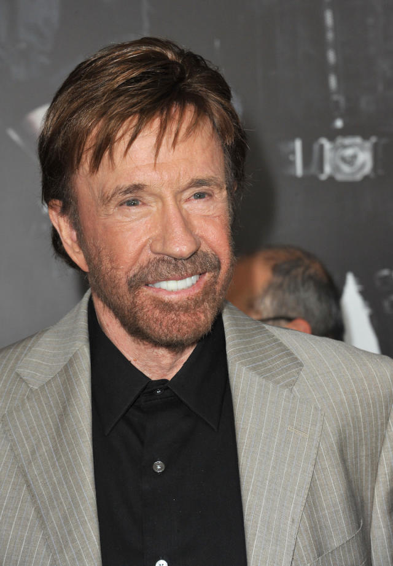
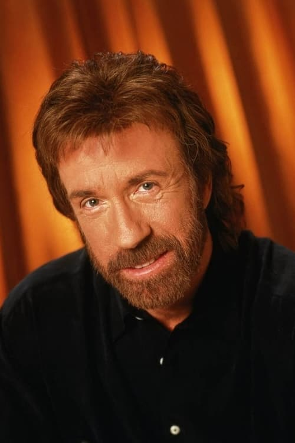

Dato 1
Trabajó en películas de acción como A Force of One (1979), The Octagon (1980) y An Eye for an Eye
(1981), Silent Rage (1982), Forced Vengeance (1982), Lone Wolf McQuade (1983). Firmó con Cannon
Films para la que rodó Missing in Action (1984), que tuvo un gran éxito y lanzó una trilogía,
después, Invasion USA (1985), The Delta Force (1986), Firewalker (1986), y otras.

Dato 2
También trabajó en Code of Silence (1985), considerado uno de sus mejores filmes, en Delta Force 2
(1990), The Hitman (1991), Forest Warrior (1996) y The President's Man (2002).
Norris hizo su última aparición en el cine en The Expendables 2 (2012).
Debutó como estrella de la pequeña pantalla en 1993 con la serie Walker, Texas Ranger. en la que
actuó hasta 2001.

Dato 3
Estuvo casado con Diane Holechek de 1958 a 1988, y con Gena O'Kelly desde1998. Padre de Mike Norris,
Dina Norris, Eric Norris, Dakota Alan Norris y Danilee Kelly Norris.
Su hijo, Mike, también apareció en varias películas como actor, y su hermano, Aaron, trabajó como
realizador en varias de sus producciones.
En 2017, sufrió dos infartos de los que se recuperó.